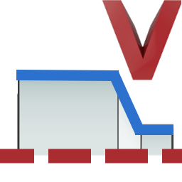

Create turning V-sketch
 | Create or change V-sketch for turning. → → | 2025 |
Create or change a V-sketch for turning, including the rotation axis. Constraints (fixed entity, horizontal, vertical, tangential, fixed angle) are added automatically. The dimensional constraints for the diameters of all horizontal lines, the radii, and the chamfers are generated.
Select
Entities: Select all curves of the turning contour  . Include a separate line for the rotation axis in the selection if it is a turning contour for a tubular workpiece.
. Include a separate line for the rotation axis in the selection if it is a turning contour for a tubular workpiece.
Rotation axis
Select the rotation axis, its orientation, and the origin of the V-sketch (fixed entity constraint). The rotation axis can be part of the turning contour (for a workpiece without a central through-hole) or an additional line next to the turning contour. The length should correspond to the width of the turning contour. The origin should be on the rotation axis:
Line: Select line  .
.
Origin: Snap the start, middle, or end point of the line  .
.
The orientation of the rotation axis and the X axis of the temporary coordinate system must match. The positive Y axis must point in the direction of the workpiece contour  :
:
Invert (keep Z): The direction of the X axis is reversed. The direction of the Z axis remains unchanged.
Invert (keep Y): The direction of the X axis is reversed. The direction of the Y axis remains unchanged.
More options
Angular tolerance: Enter a value for the limit angle up to which deviation lines are regarded as horizontal or vertical. If lines are within this tolerance, the lines are automatically corrected when the V-sketch is created so that they are actually horizontal or vertical. This value is independent of the angle tolerance entered in → → under V-sketch options!